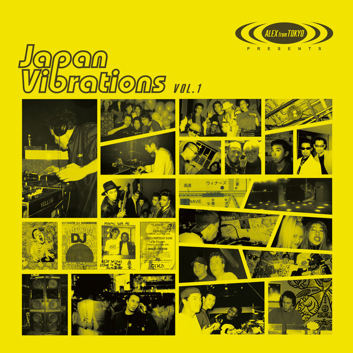
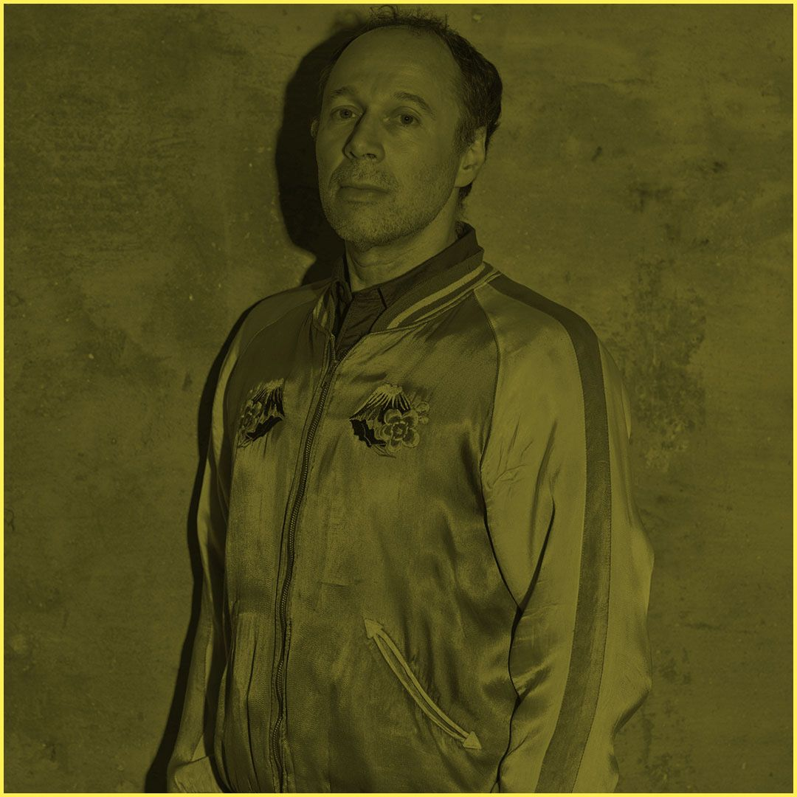

Opens in the HealthTunes app. Get the app
Ambient
Environmental
Jazz
Choose a program
Click a tile to listen.
Alex’s summit playlist

Listen to the album

“Traveler” · Alex’s library of radio shows on ROVR